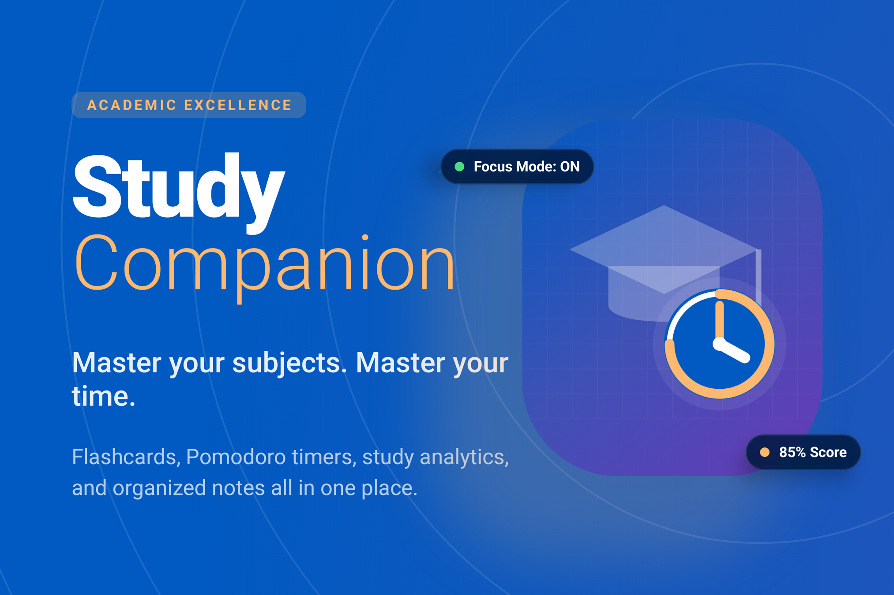

Empower your learning with AI. Convert physical textbooks into interactive digital study materials using cutting-edge OCR and personalized content generation.
Harness AI to transform how you study and retain information.
Extract text from photos of textbooks or handwritten notes with high accuracy using Google ML Kit. Digitizing notes has never been easier.
Instantly generate practice quizzes (MCQs, Essay, Short Answer) directly from your scanned materials to test your knowledge.
Convert your notes into Leitner-style flashcards for active recall and spaced repetition study, optimized for long-term retention.
Built-in Text-to-Speech (TTS) allows you to listen to your study material or notes while on the move. Listen and learn anywhere.
Transform your study sessions in four easy steps.
Open the app and tap "Scan". Take photos of your textbook pages or handwritten notes. The app will extract the text in real-time.
Tap "Confirm & Generate". The AI will process your text, perform web research, and create personalized tests, notes, and flashcards.
Take a timed MCQ test to verify your knowledge, or use the flashcard deck for active recall. Use Tutor mode to listen to the content.
Check the Analytics screen to see your study streak, XP, and badges. Use Revision Mode to focus on areas where you missed questions.